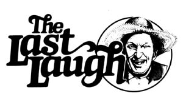

August A. Busch, Sr. (of the Anheuser-Busch brewing fortune) was so proud when his horse, Chief Uncas, qualified for the 1925 Kentucky Derby that he filled a private railroad car with family and friends and journeyed to Louisville to enjoy the race. Unfortunately, however, Chief Uncas finished 20th in a field of 20 ... some 20 lengths behind the 19th horse and 52 lengths back of the winner, Flying Ebony. This prompted a local sportswriter to observe: "Many of Mr. Busch's friends went to Louisville on Saturday to see his horse start in the Derby. Some of them stayed over the weekend to see him finish." - Classic Magazine
I don't know how things was up your way this past winter, but it was damn unpleasant here at Plumtree Crossin'. You know them stories about how the Ice Age swept across Siberia so fast that mastodons were instantly froze right in mid-bite as they chewed their cuds? Well the same thing happened here.
Lafe Higgins's whole flock of geese-he musta. had 50 or 60 of 'em-was right out there in Lafe's east pasture when the biggest Blue Norther' to hit Barren County in 96 years blowed through the immediate vicinity. Froze every last one of those geese instantly. And all in lifelike positions too.
Well, Lafe was in a hell of a fix. He'd promised his wife that she could sell those birds and use the money to pay for indoor plumbing in that old farmhouse of theirs and he sure did hate to disappoint her. If it hadn't been for that bus load of Florida-bound tourists from Minnesota that got snowed in over on the main highway, I don't know what he'd done.
Anyhow, after about three weeks of the worst weather we've ever seen in these parts, it became obvious that those tourists were never going to make it to Florida. And, besides, they'd kinda lost their enthusiasm for completin' the trip about the time they heard Walter Cronkite report that it was snowin' in Miami for the first time in recorded history.
That's when the tourists told their driver, "To hell with it. If the roads ever clear up, let's just turn around and go back to Minnesota. Sure wish we had some Florida souvenirs to take back with us though."
Well that got ole Lafe-who, as you know, has been called an opportunist on more than one occasion-to thinkin'. And bedanged if he didn't go out there in the pasture, gather up those geese, tie 'em all to stilts, dip em in pink paint ... and sell 'em to those tourists as flamingo statues to set out in their front yards when they got home. Cleared better'n $600 too. I just hope that bus is a long ways north when those birds finally thaw out.
Course not all the catastrophes brought on by this winter's inclement weather took place outdoors. We had a considerable amount of froze-up pipes in barns and houses and sech as that too. And on the night that the wind came up so strong, it blew enough snow through the keyhole of Emory Smithers's back door to fill the kitchen with a drift up even with the top of the refrigerator.
At that I reckon he got off lucky. Because over at Newt Blanchard's place the same wind blowed open the doors on both the barn and the house ... and that's why poor ole Newt waked up the next morning with three cows, a horse, and seven guineas in the bedroom with him. Sobered Newt pretty good, I hear, and he hasn't touched a drop of Purvis Jacob's liquid stumpblaster since.
If anybody took the spell of bad weather personal, though, it was Skeeter Ridges. Skeeter's a cold-natured cuss, you know ... and the lower the temperature dropped, the closer Skeeter got in the habit of standin' next to that old wood-burnin' cookstove he's got in his kitchen. Well there was nuthin' wrong with that, of course ... until the mornin' that Skeeter bent over just as he was pullin' on a fresh set of long underwear. I reckon you can imagine the rest. But if you can't, let's just say that Skeeter's been branded for life ... and in almost exactly the spot we usta brand maverick calves out on the ole Double-R-Bar ranch in Texas. Skeeter don't have much to say on the subject.
Then again, none of the folks around here can figure out why he's taking this particular accident so serious. Cause Skeeter is famous-you might say notorious-in these parts for the comical nature of the mishaps he's always havin'. As Cleedy McCannon was sayin' just the other night, "I don't see how a man who's known to have caught his ear in a car door on three separate occasions can get so upset over a little burn on his bottom. "
Unfortunately for Cleedy, he was in the Plumtree Crossin' General Store when he made that observation and Skeeter waltzed in while Cleedy's back was turned makin' it. Well, in a way, you might say that put a damper on the evening right there. At least temporarily. Cause ole Skeet jest walked right on by the crowd gathered around Cleedy, parked hisself by the potbellied stove, and spent the rest of the night settin' there and swearin' somethin' beautiful. And, if anything, Skeet is what you might call your accomplished cusser. Before too long, as a matter of fact, it got to be downright entertainin' just listenin' to him inventin'new oaths and lettin''em. out.
Well sir. The more he cussed, the more ole Skeet warmed to his task and the hotter his profanity became. Pretty soon the cold Blue Norther' whistlin' around the eaves outside was equaled-and then exceeded-by the blazing blue atmosphere that Skeeter Ridges was stirrin'up inside that store.
By the time someone finally got up, opened the door to go home, and thereby inadvertently slapped that gale full in the face with the blisterin' firestorm inside that had rolled off Skeet's tongue ... well sir, that blizzard knew it had met its match. And it just gave up and skulked on off back up toward the North Pole someplace where it had come from in the first place.
And that's how the back of the turrible winter of '76-'77 was finally broke. Leastways that's how some of the folks around Plumtree Crossin' tell it.
|
 |
|
|